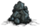

| Batilisk | |
|
|
| Health | 50 |
| Damage | 20 |
| Attack Period | 1 |
| Attack Range | 1.5 |
| Walking Speed | 8 |
| Loot | |
| Spawns from |  |
| DebugSpawn | "bat" |
| “ | Who taught that rat to fly? | ” |
| –Woodie | ||
Batilisks are flying creatures that originally live in Caves and can commonly be found in Stalagmite Biomes. They come to the surface through unplugged Sinkholes at Dusk and to Caves from unplugged Ruins Sinkhole when it gets dark. They deal a small amount of damage and with most characters take two hits to kill with a Spear and Bat Bat and one hit with most other melee weapons. They drop Batilisk Wings, Monster Meat, Guano, or nothing at all when killed. Additionally, Batilisks periodically drop Guano while moving (much like Beefalo drop Manure).
Like Bunnymen, above-ground Batilisks will sleep if they can't reach their home (the sinkhole which spawned them) by morning. They deal very little damage or none at all to walls, but they can fly over them, so walls are useless as barriers. Despite being able to fly, Batilisks cannot cross water or chasms.
A Batilisk that isn't attacking anything will eat Meats left on the ground. If it comes across a stack, it will chew through the whole stack before moving on, ignoring other mobs or the player until then.
Multiple Batilisks will join together and swarm characters (and other mobs), circling them as the characters move about or stand still. They will let out a cry before breaking their circle to attack and will charge straight at their target, allowing for timed attacks or kiting if multiple choose to attack at one time.
When facing many Batilisks underground, it is often helpful to bring a Bunnyman along for assistance. Batilisks and Bunnymen are naturally aggressive towards each other. As long as the player keeps running, Batilisks can't get an attack in (much like most mobs). A safe and efficient way to kill them is to lead them to some Bunnymen. Batilisks also engage in battle with Spiders, Spitters and Cave Spiders, but they will eat the Batilisk's meat.
Aboveground or in Caves, to farm Batilisks, stay next to an open sinkhole and hit them as soon as they spawn at dusk. Because of their somewhat predictable attack pattern, they can be smacked as they squeak, or the player can even run in the direction a circling Batilisk is about to go.
In winter, less Batilisks emerge from the sinkhole than normal. Players are advised to start hunting in summer for maximum loot.
Batilisks can be tracked by their guano. The player can determine a distance to camp from an open sinkhole by checking how far away from the sinkhole the piles of guano are.
Below is the number of hits it takes with each weapon to kill Batilisks when playing with characters with a default damage modifier.The Weather Pain is not included due to the random nature of its projectile.
| Weapon |
|
|
| |||
|---|---|---|---|---|---|---|
| No. of hits for | 12 | 4 | 3 | 2 | 2 or 1 | 1 |
Flying Batilisk. Another flying Batilisk. The Batilisk's battle cry. Batilisk eating Monster Meat. A sleeping Batilisk. ") Frozen Batilisk. ") Batilisks emerging in a group from an open Sinkhole. ") 3 Batilisks chasing a Pig. 6 Batilisks surrounding the player. A dead batilisk along with the items it dropped. |
| Mobs | |
| Hostile Monsters | Batilisk • Cave Spider • Clockwork Bishop • Clockwork Rook • Clockwork Knight • Dangling Depth Dweller • Depths Worm • Frog • Guardian Pig • Ghost • Shadow Creature • Hound (Red Hound • Blue Hound) • Killer Bee • Lureplant • MacTusk • Merm • Mosquito • Spider • Spider Warrior • Spitter • Tallbird • Tentacle (Big Tentacle • Baby Tentacle) • Wee MacTusk • (Birchnut Treeguard • Varg |
| Boss Monsters | Ancient Guardian • Deerclops • Spider Queen • Treeguard • (Bearger • Dragonfly • Goose |
| Neutral Animals | Bee • Beefalo • Bunnyman (Beardlord) • Koalefant • Krampus • Pengull • Pig (Werepig) • Rock Lobster • Snurtle • Slurtle • Smallish Tallbird • Splumonkey • (Buzzard • Catcoon • Volt Goat |
| Passive Animals | Baby Beefalo • Butterfly • Chester • Crow • Gobbler • Mandrake • Rabbit (Beardling) • Redbird • Smallbird • Snowbird • (Glommer • Moleworm |
| Other | Abigail • Charlie • Maxwell • Pig King |
{kind=link}
{kind=link}
{kind=link}
{kind=link}
{kind=link}
{kind=link}
{kind=link}